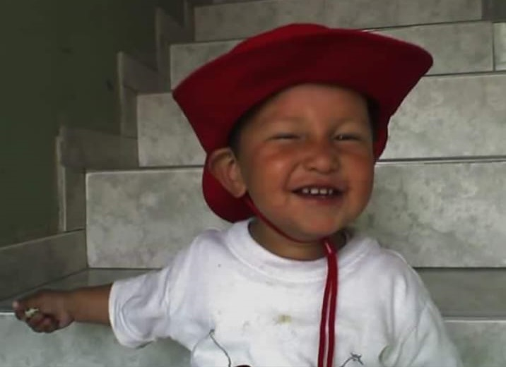

Mi Proyecto de Vida
Fases de mi vida...

Gestacion:
El 27 de septiembre de 2007, en la bulliciosa ciudad de Bogotá, Colombia, vi la luz del mundo en la acogedora atmósfera de la Clínica del Bosque. Aunque mi llegada fue un acontecimiento lleno de alegría para mis padres, fue el 6 de diciembre de ese mismo año cuando mi existencia fue oficialmente reconocida con mi registro civil. En ese momento, mi nombre quedó plasmado en documentos oficiales, marcando el comienzo de mi identidad en el mundo. Desde entonces, ese nombre ha sido mi firma, mi esencia, y ha guiado mi camino a lo largo de los años. Cada vez que veo mi nombre escrito, recuerdo ese día en que mi vida quedó oficialmente establecida. Es un recordatorio constante de mis raíces, de quién soy y de todo lo que he vivido desde aquel momento. Y así, con ese simple acto, mi vida adquirió una forma tangible, una identidad que me ha acompañado en cada paso de mi viaje.
Niñez:
Mi infancia fue un tiempo lleno de amor y alegría, gracias al cariño incondicional de mi familia. Los días transcurrían entre risas y juegos, especialmente al lado de mis queridos primos. Nuestro refugio era el barrio Lisboa, donde vivíamos en Amendo, un lugar lleno de magia y aventuras. Mis abuelos fueron piezas fundamentales en mi crianza, siempre dispuestos a mimarme y guiarme con sabiduría. Sus cuidados y enseñanzas marcaron mi camino y llenaron mi corazón de gratitud. Y así, entre los brazos protectores de mi familia, di mis primeros pasos hacia la educación formal al ingresar a Transición en el Colegio República Dominicana. Fue el comienzo de una nueva etapa, llena de descubrimientos y aprendizajes, pero siempre con el apoyo incondicional de quienes me rodeaban. Cada recuerdo de aquellos días evoca la calidez del hogar, la risa compartida y el amor que siempre me rodeó. Mi infancia fue un regalo preciado, enriquecida por el amor y los lazos familiares que me han acompañado en cada paso de mi vida.
Preadolescencia:
Mi pre adolescencia fue una época especial, marcada por el amor y el apoyo constante de mi familia, especialmente de mi mamá. A pesar de los cambios, como mudarnos de casa al barrio El Poa, el vínculo con mis seres queridos se fortaleció aún más. Parte de mi familia también se trasladó para estar cerca, manteniendo así nuestra unión intacta. Mis días estaban llenos de aventuras compartidas con mis primos, bajo el cuidado cariñoso de mi abuela. Vivir con mis abuelos fue una experiencia enriquecedora que me brindó estabilidad y afecto incondicional. Un hito importante durante esa etapa fue recibir mi primer celular, un pequeño dispositivo que simbolizaba mi crecimiento y la entrada en una nueva era de independencia y responsabilidad. A pesar de los cambios, continué mi educación en el Colegio República Dominicana, donde seguía cultivando conocimientos y amistades. Así, mi pre adolescencia estuvo llena de momentos especiales y aprendizajes significativos, guiados por el amor de mi familia y la constancia en mi camino educativo. Estos recuerdos preciosos continúan siendo parte importante de mi historia, recordándome el valor de los lazos familiares y el crecimiento personal.